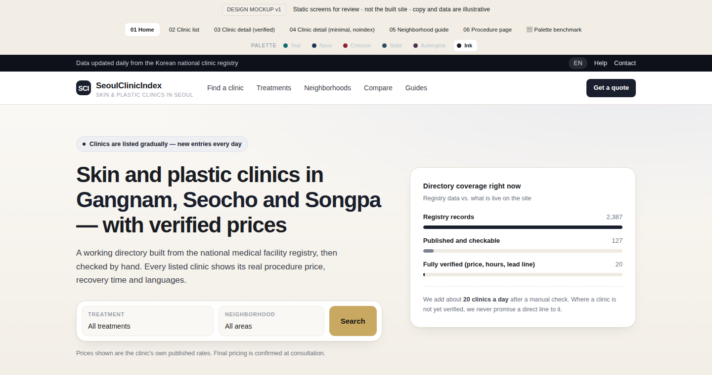
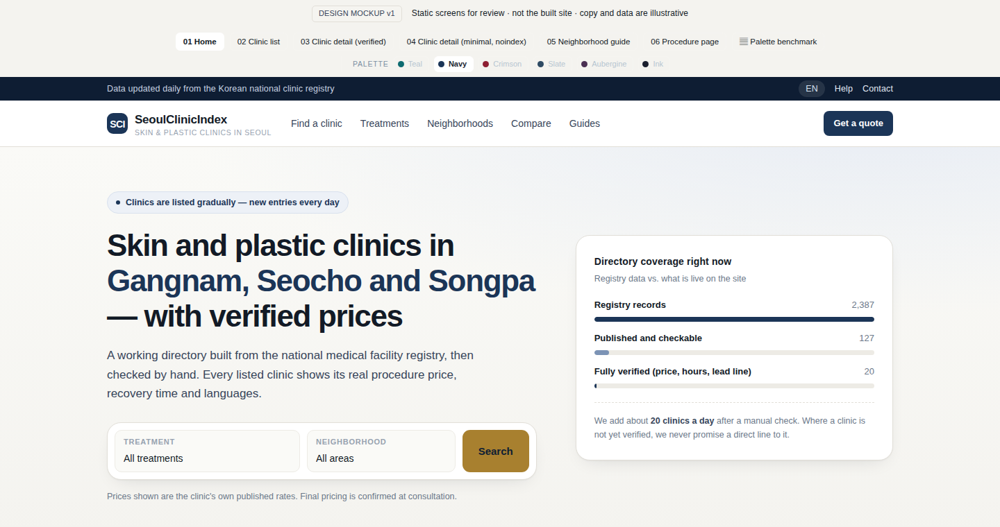
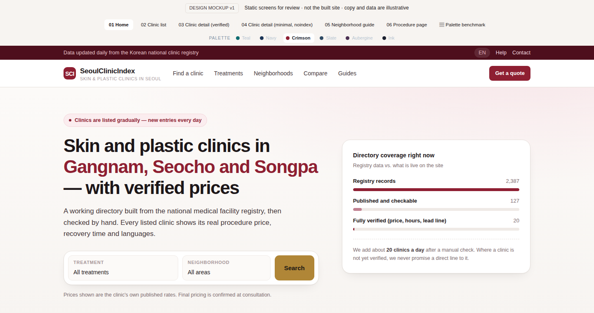
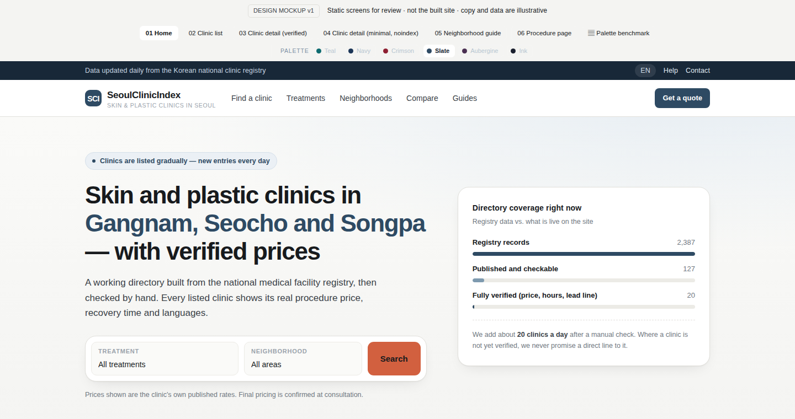
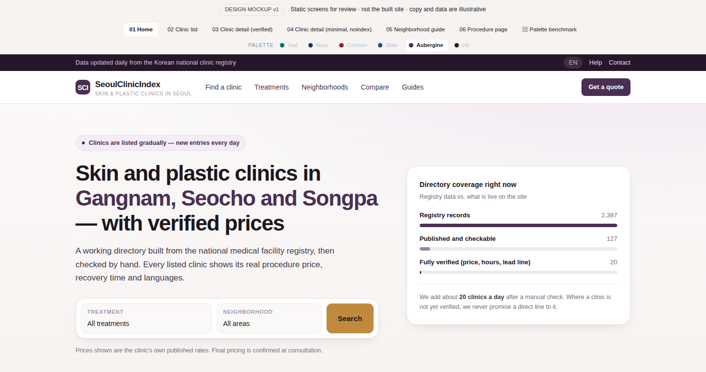
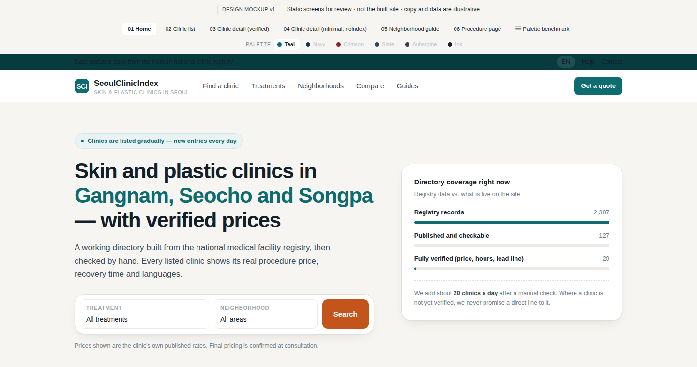

Six palettes built on the same structure, so the screens can be compared one for one. Every candidate keeps the warm paper ground and the single-action-colour rule — only the brand hue and the accent move.
The live mockup carries a palette switcher in its top bar. Open any screen and flip the six options there; the choice is stored in the browser and can be shared as a URL (?theme=navy).
Green and teal are not the category default. Of the nine sites sampled below, only two lead with a teal-family brand colour — treatment.com (#03A989) and plasticsurgery.org (#018BAF). Both are high-volume, utility-first properties: a treatment marketplace and a professional body. They read as "generic healthcare provider", the colour of hospital portals and pharmacy chains.
The dominant pattern in this category is a deep ink or navy brand plane with a warm metallic accent. The closest match to our own reference — a premium Korean clinic's global site — uses #1A1F2E ink + #C9A962 gold on #EDE8E0 cream. That is structurally the same as our current teal design with the hue moved: the layout, the warm paper ground and the single-action-colour rule all survive. Ink & Gold reproduces that structure most closely; Navy & Brass is the same idea pushed further into blue, which reads more institutional and less premium.
The competing lead-generation directory we are modelling uses #E21D48 / #D91C45 crimson with a #FF4500 orange action colour on near-white grey. It is loud and converts on volume rather than on trust. Crimson & Gold keeps that family but pulls the saturation down so it reads as editorial rather than as a sale banner.
Recommendation: Ink & Gold. It matches the strongest convention in this category, it keeps the warm paper ground that makes the site feel like a directory rather than a sales page, and the gold accent gives the price-led content — our differentiator — a place to live. Navy & Brass is the safe second choice if you want the trust signal to read as data infrastructure rather than as luxury. The aubergine option is the most distinctive but the least expected, which is a risk if the goal is to look established on first sight.
Hex values read out of each site's own stylesheet or inline styles on 22 Oct 2026. Two brand tones are listed where a site uses both a primary and a secondary; the ground column lists the page background and the card surface.
| Site | Brand | Other brand tone | Action colour | Ground | Read from |
|---|---|---|---|---|---|
| relieveclinicseoul.comPremium Korean clinic, global site | #1A1F2E |
#2D3447 |
#C9A962 #E0C88A |
#EDE8E0 #FAF8F5 |
inline styles |
| bestskincareinkorea.comCategory reference — lead-gen directory | #E21D48 |
#D91C45 #B51739 |
#FF4500 |
#F9FAFB #F3F5F7 |
site CSS |
| treatment.comInternational treatment marketplace | #03A989 |
#EC7A4B #FF6900 |
#3F444B #69727D |
site CSS | |
| medicaltravelkorea.comKorean medical-tourism portal | #393939 |
no separate action colour | #F5F6F8 #F6F6F6 |
inline styles | |
| healthline.comHealth editorial, high reach | #231F20 |
#02838D |
#AF7F2C |
#FFFFFF #EEF5F6 |
inline styles |
| medicalnewstoday.comHealth editorial | #231F20 |
#3D5191 |
#F0533A |
#DCDBDB #FFFFFF |
inline styles |
| clevelandclinic.orgUS hospital system | #007BC2 |
#BD2426 |
#FFFFFF #EBEBEB |
inline styles | |
| plasticsurgery.orgProfessional body | #018BAF |
#024A63 |
#E79748 |
#F1F7F9 #FFFFFF |
site CSS |
| koreanskinpedia.comOur own K-beauty property | #C8FF3D |
#FF4D2E |
#FBFAF7 |
site CSS |
Counting only the primary brand colour, two of the nine sites lead with a teal-family hue (treatment.com, plasticsurgery.org). Five of the nine use a dark ink or navy brand plane, and where a metallic accent appears it is gold or bronze in every case.
Each card previews the home screen in that palette. Open the mockup with the palette switcher to see all six screens in the same colour.

Near-black ink plane with champagne gold, on a warm cream ground. The closest match to the premium-clinic reference we sampled, and the strongest convention in this category: dark brand plane, one warm metallic accent, nothing else competing.

Deep navy brand plane, champagne gold action colour, warm paper ground. The strongest convention in this category and the closest match to the premium-clinic reference.

Same family as the category reference but pulled back from sale-banner red to a deep editorial crimson. Warmer and more confident, with less institutional feel.

Cool slate blue with a coral action colour. The least "luxury" of the six and the closest to a mainstream wellness brand — readable and calm, but the weakest premium signal.

Deep aubergine with sand gold — the K-beauty editorial register rather than the medical one. The most distinctive of the six, and the least expected by someone arriving from a US clinic site.

The current palette, kept for comparison. Calm and legible, but the teal sits in the same register as hospital portals and pharmacy chains — it does not say "premium" or "editorial".